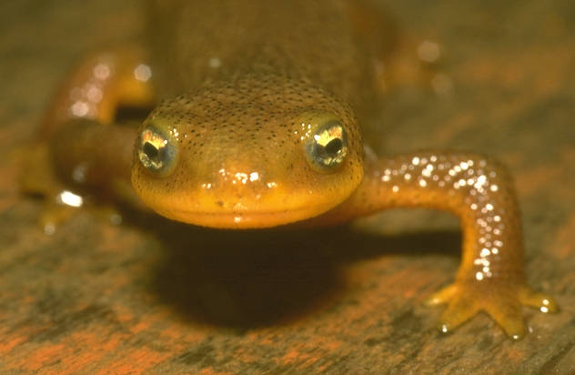
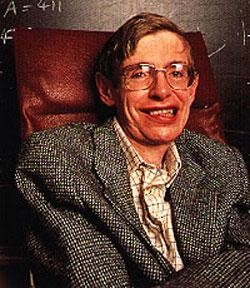
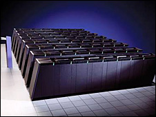

Las patas de las salamandras
Mi abuela materna, recientemente fallecida, padecía de Alzheimer. Cuando yo supe que ella lo tenía me preocupé porque asumí que era un condición genética, y por lo tanto, tendría una posibilidad de padecer lo mismo. Con el cáncer me pasó lo mismo, pues mi padre y abuela paterna murieron cerca de los 40 de esta enfermedad. Ahora sé que estadísticamente hay un 1 por ciento de probabilidades de que llegue a desarrollar el cáncer, pero además sé que el tipo de cáncer en cuestión es tratable actualmente, y tiene muy bien pronóstico si se diagnostica a tiempo, entonces debo controlar mi salud con cierta periodicidad, lo malo es que el examen es bastante desagradable. Pero en el caso del Alzheimer la probabilidad no es clara. La verdad es que las hijas de mi abuela tienen una probabilidad de 50% de desarrollar alzheimer, pero deben poseer además ciertas mutaciones a nivel del los cromosomas 1, 14, y 21. En mi caso y de mis hermanos las posibilidades bajan a un 25%.
Actualmente hay un examen que busca la presencia del gen APOE (Apolipoproteina E) mediante el análisis de los alelos del APOE, especialmente la variedad del APOE e4. Cómo todos heredamos los alelos APOE de cada uno de nuestros padres, la presencia de 2 copias de APOE e4 en nuestros genes significa un alto factor de riesgo.
La tortura de saber
¿Se haría usted el test del APOE e4?
Yo personalmente no. Una razón es que a pesar de ser un factor de riesgo, hay personas que tienen 2 copias de e4 en su sangre y nunca desarrollan alzheimer. La segunda razón es porque no sabemos aún con certeza que gatilla el alzheimer. Se sabe que grandes sufrimientos gatillan el alzheimer, y la estabilidad emocional es un mecanismo de prevención eficaz.
Política y biotecnología
Pero que pasa si un gobierno decide que el costo de mantener a una población con alzheimer no vale la pena, y hace que el examen sea obligatorio. ¿Cuanta gente podría ser marcada como paría por tener 2 copias del alelo e4 en su sangre?
Por otra parte, el saber cuantos pueden llegar a tener alzheimer es un dato importante, puesto que se estima que un 8% de la población padecerá esta enfermedad. Para las compañias de seguro y las administradores de salud privados y públicos esta información es valiosisima. Para el gobierno el dato tampoco es menor, si consideramos que en nuestro país la pirámide etárea se está invirtiendo, lo que significa que la población en riesgo aumenta día a día, cosa que también pasa en Europa.
Este es uno de los temas de los que tiene que preocuparse
la política del futuro,
sobre la cual escribe Sebastían Escobar, en el
blog de mi Hermano.
La película Gattaca
Entendiendo la Evolución

Estas pesadillas distópicas tienen su origen en que la mayoría de las personas consideran a la evolución como un mecanismo de progreso. Cuando en realidad la evolución es un mecanismo de adaptación. No somos mejores que una salamandra, como se podría deducir del final del artículo del señor Escobar.
La diferencia evolutiva entre la salamandra y el hombre no es mayor que entre una mosca y un cienpiés. Cada uno está adaptado a su nicho ecológico, y por algo están en donde están. Las salamandras son cordados, igual que nosotros, pero estamos en ramas distintas de la evolución.
Tenemos un genoma distinto, y aunque podemos definir el nivel de diferencia entre nuestro genóma y el de las salamandras, cada especie aporta al pool genético la naturaleza. De hecho las capacidades regenerativas de las células madres de las salamandras pueden ayudar a la lucha contra el Alzheimer y el Parkinson.
Cuando uno corta la pata de cierta clase de salamandra, esta regenera el miembro perdido completamente. Este tipo de recuperación se debe a la particularidad de las células madre con que cuenta esta salamandra en particular.
Puede que en el misterio de la regeneración de las patas de la salamandra esté la respuesta a la regeneración de tejidos, como el neuronal, que lleve a encontrar cura al Alzheimer, Parkinson, y tantas enfermedades que asolan sobre todo a nuestra población mayor.
Sobrevivencia
La manipulación genética es tan antigua como el hombre, o al menos apareció incluso en nuestra época de nómade. El lobo fue manipulado genéticamente por selección artificial y pudimos crear esos fieles amigos que son los perros. El maiz, el trigo, las vacas, son todas frutos de manipulación genética y de selección artificial.
El hombre siempre ha querido mejorar a la naturaleza, para poder vivir mejor, para luchar contra la muerte.
En la naturaleza los más débiles son dejados aparte, el pequeño cervatillo herido es dejado por el resto de la manada y es devorado por las hienas.

Pero nosotros no abandonamos a nuestra gente porque tiene defectos, o por lo menos no lo hemos hecho hasta ahora. Una de las personas más brillantes de la actualidad sufre de una terrible enfermedad degenarativa de su sistema nervioso, me refiero a Stephen Hawking. Un hombre que nos dice que Dios es probable que no hubiera tenido opciones al principio del universo, con lo que remece todas las bases de muchas religiones.
¿Por qué no abandonamos a nuestros enfermos? Incluso cuando puedan ser tan “impertinentes” y “peligrosos” como este celebrado físico. Porque como especie sabemos que nuestra sobrevivencia viene de las capacidades de nuestro cerebro, y hemos decidido que aunque uno de los nuestros no esté físicamente apto, su mente es valiosa para todo el grupo. En suma, sabemos instintivamente que una persona, por muy postrada que esté, tiene en si un valor intrínseco que podemos llamar alma, o mente, que es muy importante para nuestra sobre vivencia.
Es por eso que hemos cuidado de nuestros ancianos, porque recurrimos a ellos por la experiencia que han adquirido. Esa experiencia, esa Inteligencia Potencial, como la llamo yo, es valiosa y está depositada en ellos. Por eso que cuando uno de nuestros ancianos se enferma de Alzheimer es un desastre para todos. Porque no sólo perdemos el contacto con un alma, sino que desde un punto de vista más frío si se quiere, perdemos inteligencia potencial.
El software genético
En nuestra lucha por sobrevivir como especie, hemos investigado el código genético. Hoy sabemos que el genoma es una pieza más de software.
Efectivamente, el código genético puede codificarse como un lenguaje en base 4, y desde ahí en adelante es pan comido para nosotros los informáticos. Cosa que recién están entendiendo los biólogos y que ha abierto una nueva rama de investigación la llamada bio informática.

Hoy en día el mayor supercomputador del mundo, Blue Gene, está diseñado específicamente para entender los mecanismos de sintesis de proteinas. Es la máquina de cálculo más rápida jamás creada.
Pero la pregunta para un desarrollador de software es obvia, estos mecanismos usados actualmente en la bio informáticas están basados en algoritmos de fuerza bruta. Claramente las células lo hacen mucho mejor y de forma más eficiente. Entonces, ¿cuales son esos algoritmos ocultos en las mitocondrías y demás organelos celulares? Este es el problema de la ontogénesis, y es uno de los grandes desafios de la biología y de la informática.
Enhancement
El camino es obvio, en la medida que nuestro conocimiento de los procesos biológicos sea más profundo, tendremos la habilidad de mejorar nuestras capacidades. Es lo que se llama el Enhancement.
La evolución dará un salto impresionante, los mecanismos de selección natural serán desplazados por mecanismos arbitrarios dictados por nuestros deseos. Podremos evolucionar en nuevas especies que se adapten a las condiciones en otros planetas, por ejemplo.
Eso sería, un mecanismo distinto al planteado por la teoría de la evolución, y para desgracia de los creacionistas, este sí que sería un mecanismo de “diseño inteligente”.
¿Seguirán habiendo humanos?
Depende. Si los cambios son drásticos, esta especie de diseño inteligente puede crear una especie totalmente incompatible con la nuestra.
Serán una nueva especie, distinta, no mejor ni peor. Una nueva rama del genero Homo, pero creada en forma artificial.
Esto parece ciencia ficción, pero sabemos que es posible. ¿Es bueno, es malo?
Yo no tengo respuestas, pero si encontré una visión esperanzadora en una extraordinaria saga de 4 libros llamada “Los cantos de Hyperión”, en donde las nuevas especies de humanos y la nuestra logran aceptarse mutuamente en gracias a la intervención de a esa gran fuerza que liga todo en el universo...